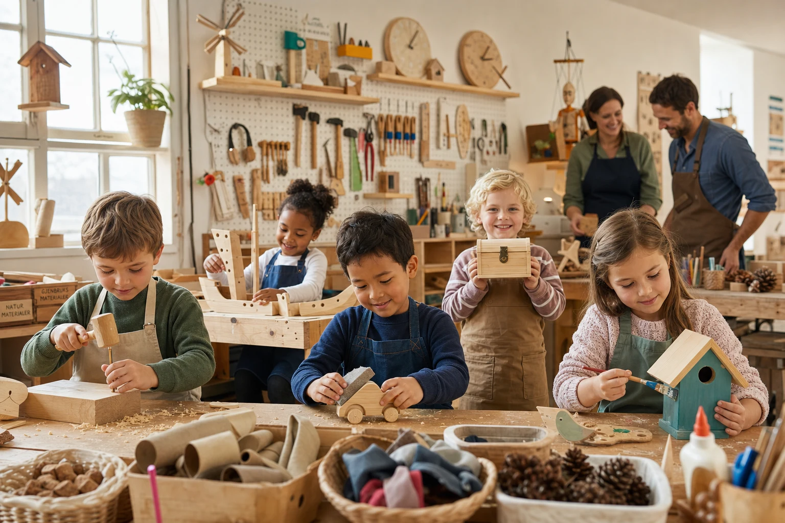
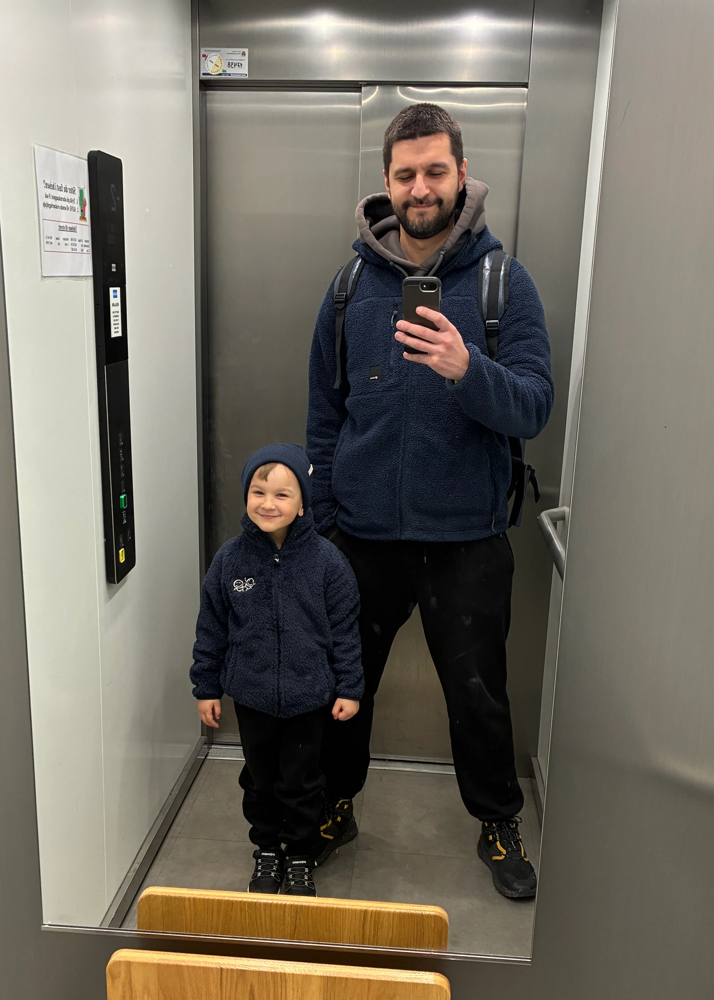
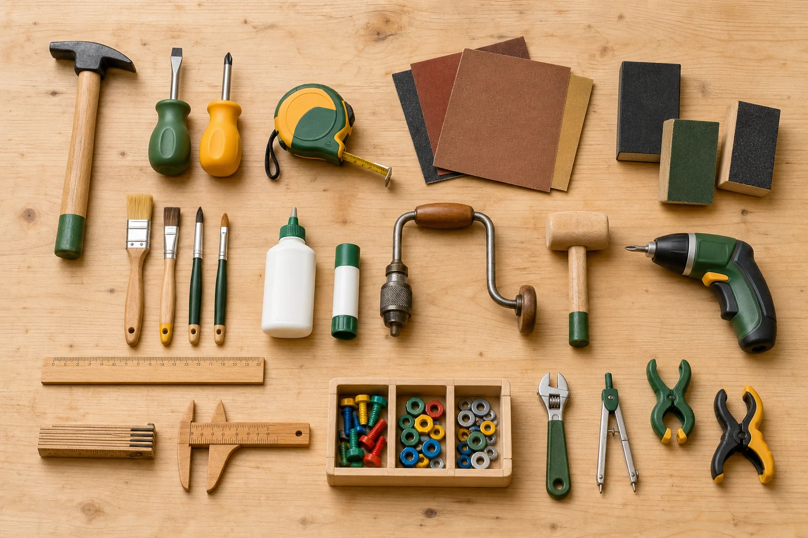

Formaa - Skaperverksted
Kreativt barnekurs i Oslo for barn 5-9 år
Et unikt verksted for barn 5–9 år. Lær å bygge, utforske og skape med egne hender.
Meld interesseFor de små
Barnekurs i Oslo øst for barn 5–9 år
Formaa-Skaperverksted er et kreativt barnekurs i Oslo (Trosterud) for barn 5–9 år, utviklet av Formaa AS. Kurset varer 90 minutter, én gang i uken i 8 uker — planlagt oppstart i Trosterud, Oslo. Eksakt dato og adresse deles med de som melder interesse.
Målet er å gi barn muligheten til å utforske, skape og bygge med egne hender. Gjennom kunst, håndverk, design og enkle konstruksjoner lærer barna å utvikle idéer, løse problemer og oppleve gleden ved å skape noe selv.
Vi ønsker å inspirere en ny generasjon skapere — barn som tør å prøve, utforske og finne egne løsninger, samtidig som de lærer praktiske egenskaper.
For foreldre
Barnekurs i Trosterud — sted, pris og opplegg
Et kreativt alternativ i nærmiljøet for familier på Trosterud, Furuset, Lindeberg og resten av Oslo øst — ikke bare skjermtid og organisert idrett.
- Sted: Trosterud, Oslo — nærmere adresse ved oppstart
- Oppstart: planlagt i september — eksakt dato sendes til de som melder interesse
- Alder: 5–9 år
- Opplegg: 90 minutter · 1 gang per uke · 8 uker
- Gruppestørrelse: maks 10 barn per gruppe — små grupper og god oppfølging
- Pris (ca.): ca. 2 990 kr for 8 uker — materialer inkludert. Endelig pris bekreftes ved oppstart.
- Praktisk: arbeidsklær anbefales; vi stiller med materialer og verktøy
Hva får barnet med seg?
- et ferdig prosjekt og flere ferdige verk å vise frem i løpet av kurset
- egen skissebok for idéer og tegninger og klistremerker
- dagens klistremerke og mestringsglede
- mer tro på egne idéer — og lyst til å fortsette å bygge hjemme
Hva får du som forelder?
- et trygt verkstedmiljø med tydelig voksenoppsyn
- aktivitet som utvikler konsentrasjon, finmotorikk og problemløsning
- noe konkret å snakke om etter kurset — «se hva jeg lagde»
Hvorfor Formaa?
Fra ekte produktstudio til barnas verksted
Formaa AS utvikler ekte produkter fra idé til prototype — med form, materialer og verktøy hver dag. Skaperverkstedet er laget av industridesignere og produktutviklere, tilpasset barn.
Det betyr ikke et tilfeldig hobbytilbud, men et strukturert verksted der barna møter samme type tenkning som brukes i profesjonell produktutvikling — i lekens og nysgjerrighetens form.
Les om teamet eller se prosjektene våre for å forstå hvem som står bak.

Instruktører
Hvem lærer bort?
Verkstedet ledes av Formaa-teamet — industridesignere og produktutviklere med erfaring fra skisser, modeller, prototyper og verkstedarbeid.
Vi kjenner materialer og verktøy fra profesjonell produktutvikling, og tilpasser opplegget slik at barna får reelle oppgaver de kan mestre — med trygg veiledning underveis.
Målet er ikke perfekte resultater, men at hvert barn tør å prøve, feile og prøve igjen — akkurat som i et ekte designverksted.
Filosofi
Alle produkter rundt oss startet som en idé.
Barn har en naturlig nysgjerrighet og fantasi. Når de får tilgang til materialer, verktøy og frihet til å eksperimentere, utvikler de både kreativitet, praktiske ferdigheter og tro på egne evner.
Hos Formaa-Skaperverksted finnes det ikke bare riktige svar. Vi oppmuntrer barna til å utforske, stille spørsmål og finne egne løsninger.
Der barn blir skapere
Hva barna lærer: bygge, tegne og skape
Tilpasset til alderen får barna erfaring med kreativ tenkning, idéutvikling og enkel designprosess — gjennom lek og praktiske aktiviteter:
- tegning og skisser
- planlegging og problemløsning
- finmotorikk og konsentrasjon
- samarbeid og tålmodighet
- skaperglede og mestring
Materialer vi utforsker
- tre, papir, papp og leire
- metall, tekstiler og silikon
- tau, snorer, skruer og spiker
- kork, plast og resirkulerte materialer
- isopor og metallgjenstander
Små hender. Store idéer.

Verktøy
Vi gjør barna trygge på enkle verktøy gjennom veiledning og sikker bruk — og lærer dem å bruke verktøy slik at de faktisk oppnår resultat.
- hammer, skrutrekker og målebånd
- sandpapir, pensler og lim
- enkle håndbor, linjal og passer
- tommelstokk, skyvlære og skiftenøkkel
- bolter, muttere og små håndklemmer
Ombruk og kreativitet
En viktig del av verkstedet er å lære barna at ting kan få nytt liv. Vi oppmuntrer barn til å samle interessante materialer hjemme eller ute og hente dem til en konkret dag — og hjelpe barnet å finne ny bruksmåte av objektet.
- korker, pappesker og knapper
- små trestykker, kongler og steiner
- stoffrester, gamle leker og bokser
- syltetøyglass, ledninger, hjul og små mekaniske deler
Vi bygger nysgjerrighet.
Bygge og tegne med barn — eksempler
- bygge sin egen verktøykasse eller en liten bil
- lage båt av tre, fuglemater eller vindmølle
- bygge skattekiste, pil og bue eller fantasidyr
- forme figurer i leire og bake dem
- lage enkel fiskestang, et lite fly eller håndklokke av tre
- bygge enkle mekaniske leker og eksperimentere med balanse og bevegelse
- designe egne oppfinnelser over flere kursdager
Vi utforsker hva hvert barn liker og lærer å lage «prosjekt» gjennom flere kursdager — med planlegging, tegning, materialer, mål og utføring, slik at barnet får glede av å fortsette arbeidet etterpå og lærer om tidsperspektiv.
En typisk kursdag på barnekurset
Ingen kurs blir helt like. Barnas egne idéer får alltid plass.
Velkommen (10 minutter)
- dagens tema og inspirasjon
- samtale om dagens prosjekt
- barna får hver sin skissebok
Utforskning (15 minutter)
- nytt materiale og nytt verktøy
- demonstrasjon og prøving
Skapetid (50 minutter)
Barna velger materialer, bygger, maler, former og eksperimenterer med egne løsninger. Instruktøren veileder underveis.
Deling (10 minutter)
Alle får vise frem prosjektet sitt og fortelle om hvordan de tenkte.
Rydding og liten premie (5 minutter)
- vi avslutter med å rydde sammen og ta vare på materialene
- alle barna får dagens klistremerke
Trygghet
Sikkerhet er grunnlaget for at barna kan utforske friere. Alle aktiviteter tilpasses barnas alder, gjennomføres under oppsyn og med hensyn til barnas sikkerhet.
- verktøy introduseres gradvis — ingen barn tvinges til noe de ikke er klare for
- alderspassede oppgaver og materialer hver uke
- små grupper gir bedre oppfølging og tryggere bruk av verksted
- ingen farlige maskiner uten direkte veiledning
- tydelige rutiner for rydding og oppbevaring av verktøy
FAQ
Vanlige spørsmål om barnekurs hos Formaa
Må barnet være «kreativt» fra før?
Nei. Nysgjerrighet er nok. Noen barn liker å tegne, andre vil bare bygge — begge deler får plass. Verkstedet handler om å prøve, ikke om å være flink fra start.
Hva skal barnet ha på seg?
Komfortable klær som tåler litt støv og lim — gjerne noe dere ikke er redde for får flekker. Vi stiller med forkle og materialer.
Hva om barnet ikke liker å tegne, men liker å bygge?
Det er helt normalt. Skisseboka er et verktøy, ikke et krav — mange prosjekter starter med bygging og materialer. Instruktøren tilpasser tempo og metode.
Kan søsken i ulike aldre melde interesse?
Ja. Meld interesse for hvert barn, eller skriv i skjemaet hvor mange barn dere vurderer. Vi planlegger grupper innenfor aldersspennet 5–9 år.
Hva koster kurset?
Ca. 2 990 kr for hele kurset (8 uker), materialer inkludert. Dette er et foreløpig overslag — endelig pris bekreftes ved oppstart.
Er det bindende å melde interesse?
Nei. Du får tidlig info om oppstart, plass og pris i Trosterud — uten forpliktelse. Meld interesse bare hvis du vil holde deg oppdatert.
Får vi info før første kursdag?
Ja. De som melder interesse får beskjed først om dato, sted, pris og praktisk informasjon når kurset er klart til oppstart.
Hvor i Oslo er verkstedet?
Planlagt lokasjon er Trosterud — sentralt for familier på Oslo øst. Nærmere adresse og praktisk info sendes til de som står på ventelisten.
Finnes det barnekurs i Oslo øst?
Ja. Planlagt på Trosterud, nær Furuset og Lindeberg.
Er dette et tegnekurs eller et byggekurs?
Begge deler. Barna bygger og tegner; skisseboka er et verktøy, ikke et krav.
Når starter kurset?
Planlagt oppstart i september. Eksakt dato sendes til de som melder interesse.
Venteliste
Bli blant de første
Meld interesse for å få tidlig info om oppstart og plass i Trosterud. Ca.-pris nå er 2 990 kr for 8 uker — endelig pris bekreftes ved oppstart. Ingen forpliktelse.
Vi samler interesse fra familier i området og tar kontakt når kurset er klart. Jo tidligere du melder interesse, jo lettere er det å planlegge grupper og tidspunkt.
Meld interesseFyll inn skjemaet under — vi kontakter deg når kurset åpner i Trosterud. E-posten din brukes bare til oppdateringer om Skaperverkstedet.
*Alle aktiviteter tilpasses barnas alder, gjennomføres under oppsyn og med hensyn til barnas sikkerhet.